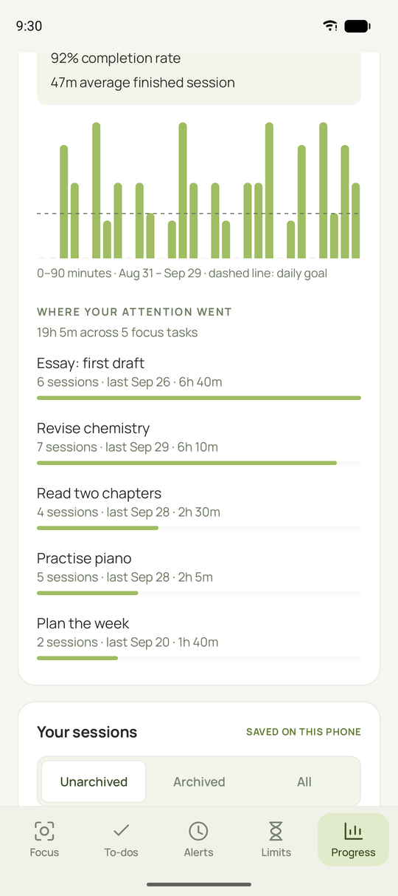

Curious? That’s a good start.
Short answers to the things people ask most. For step-by-step help, see the guide.
StartIs Still free?
Yes. Still is free and open source under the MIT license. There are no subscriptions, ads or in-app purchases.
StartWhat do I need to run it?
An up-to-date Windows 10 (version 2004 or later) or Windows 11, 64-bit, with Windows PowerShell 5.1 and .NET Framework 4.8. Both are normally included. Website blocking and time limits need Chrome or Edge.
StartIs there a Mac, Linux or phone version?
Not for Mac or Linux. Still is built around Windows’ own application control (AppLocker). An Android version is in preview, with sessions, app and website blocking, daily limits, to-dos, history and alerts. It’s a test build, not a finished release yet. You can download the Android preview to try it.
StartHow do I install the Android preview?
You need Android 11 or newer. Download the APK from the download page on your phone and open it, allowing your browser to install apps if Android asks. Open Still Focus, tap Turn on app blocking and switch Still Focus on under Accessibility. If Android says the setting is restricted, open App info → ⋮ → Allow restricted settings and try again. Updates install over the top and keep your to-dos, alerts and history.
BlockingHow does blocking work on Android?
Android has no AppLocker, so Still uses an accessibility service instead. When a blocked app opens, Still sends it back to the home screen and shows your block screen. For websites, it reads the address bar of Chrome, Edge, Brave, Vivaldi, Firefox, Samsung Internet and DuckDuckGo, and steps back from blocked sites. Browsers it can’t read are blocked during sessions with websites. Like on Windows, Still refuses work profiles and managed phones, and if anything goes wrong it stops blocking rather than locking you out. Safe mode always switches it off.
StartWhy does Windows say it “protected my PC”?
The installer isn’t code-signed yet, so SmartScreen doesn’t recognise it. Choose More info → Run anyway. You can compare the SHA-256 checksum on the download page, or build Still from source.
StartDo I need to be an administrator?
Not to install. Still installs for your account. Enabling Windows protection needs administrator approval once, because it installs the Still Guard service.
StartCan I use it on a work or school PC?
Probably not. Domain-joined and MDM-managed PCs, and PCs that already use application-control rules, are intentionally refused so Still never changes an organisation’s security policy.
BlockingHow does app blocking work?
Still Guard applies temporary Windows AppLocker rules: exact path and file-hash rules for desktop apps, publisher rules for signed updates where possible, and package identity for Store apps. Windows then refuses to start them, whether from Explorer, a shortcut, a launcher or the command line.
It isn’t a loop that closes apps after they open.
BlockingCan I end a session early?
Yes. Request release, wait out the delay you chose (1–120 minutes, or none), then choose End focus session. Cancelling restores the lock, and a new request starts a new full wait.
BlockingWhat if I quit Still or restart my PC?
The session carries on. Still Guard runs independently of the window, and timers and release requests are saved and survive restarting Windows. Alerts stop when you quit, unless you turn on Alarms after you quit in Settings.
BlockingIs it impossible to get around?
No, and no app can honestly promise that against the administrator of the same PC. Still is designed to add friction and a moment to reconsider. Read the honest limits.
BlockingI blocked a launcher but a game still opens.
A launcher alone doesn’t identify every game it can start. Select each game’s own executable as well. You can browse to any .exe from Add applications.
BlockingWhich browsers are supported for websites?
Chrome and Edge, via the Still extension from the Chrome Web Store in each profile you use, plus machine-level browser policies as a fallback. See setup.
BlockingCan I use the browser extension without the Windows app?
Yes. Still · Website focus on the Chrome Web Store has its own website list, focus sessions, daily limits, bedtime and block screen, and works on Windows, Mac, Linux and ChromeOS. On its own it only blocks websites, and its sessions can be ended at any time. For more control, we recommend pairing it with Still for Windows: app blocking, scheduled alerts and sessions you can’t end early. The two work together; neither releases what the other holds. About the extension.
BlockingDoes blocking a site block its subdomains?
Yes. Blocking youtube.com also covers m.youtube.com, but not a different domain like notyoutube.com.
FeaturesCan I save sets of apps?
Yes. Select what you want in Apps & websites and choose Save selected as group. Groups appear in Focus space for one-click selection.
FeaturesCan sessions start on a schedule?
Yes, with Alerts. Schedule once, daily or on weekdays, and have the alert block the current selection, its own selection, or nothing. An existing session is never replaced.
FeaturesHow are daily time limits counted?
While a limited website is open in any Chrome or Edge tab, focused or not, checked every 30 seconds. Several tabs of the same site count once. When time is up, the site rests until midnight. Bedtime rests it overnight.
FeaturesDoes “Essay” count as a different task from “essay”?
No. In Your progress, Where your attention went counts intentions that differ only in capitals or spaces as one task, on Windows and Android. The row shows the spelling you used most recently, and on Windows the task keeps its colour. Your saved history keeps exactly what you typed.


FeaturesCan I customise the block page?
Yes: choose a built-in screen, write your own headline and note with a JPG/PNG/WebP image, or redirect to an HTTPS page of your choice.
FeaturesCan I make the text bigger or easier to read?
Yes. Settings → Made to fit you has a text size menu (100% to 175%) that scales the whole app, so the layout rearranges itself to fit. You can also turn on high contrast, an easier-to-read font (Atkinson Hyperlegible, made by the Braille Institute) and stronger keyboard focus outlines. Alarm screens follow the same choices. The Android preview has the same options in its Settings (the sliders button at the top right).
FeaturesCan I turn off animations?
Yes. Settings → Made to fit you → A gentler pace reduces motion in the app. This website also respects your system’s reduced-motion setting.
PrivacyDoes Still collect any data?
No. There are no accounts, analytics or telemetry. Your selections, sessions and history stay on your PC. Read more.
PrivacyDoes it connect to the internet?
Only to fetch a selected website’s logo (cached afterwards) and to check GitHub for updates when you click Check for updates.
PrivacyDoes the browser companion see my history?
It matches visits against your blocked domains using the browser’s own rules. It doesn’t upload browsing history, intercept encrypted traffic or install certificates.
StartHow do I update?
Download and run the newer setup. It keeps your preferences, alerts, to-dos and history, and protection keeps running. See what’s new.
StartHow do I uninstall?
Windows Settings → Apps → Installed apps → Still. You can also remove Still Guard and your data. If something’s stuck, see recovery.
StartHow do I contact you?
Email contact@stillfocus.fyi. For bugs and feature requests, GitHub issues are best, so others can follow along.
Try another word, ask on GitHub or email contact@stillfocus.fyi.